Dari ERD konseptual notasi Chen ke ERD logis crow’s foot, selalu bersanding dengan DFD.
Bagian pertama, unsur gambar dan kuncinya. Tidak perlu dihafal, kembali ke daftar ini setiap kali bingung.
Bagian kedua, cara membaca dan cara merapikan. Lanjutan daftar pada slide sebelumnya.
Sub-CPMK 5. Konseptual dan logis dikerjakan, fisik hanya dikenali.
Semuanya pekerjaan perancang basis data. Anda cukup tahu keputusan itu ada.
Gambar model data: apa yang disimpan sebuah sistem, dan bagaimana semuanya saling terhubung.
Gambar yang memperlihatkan data apa saja yang disimpan sebuah sistem dan bagaimana data itu saling terhubung. Diperkenalkan Peter Chen (1976), kini dipakai di hampir setiap pembuatan sistem informasi, di bidang apa pun.
Merancang basis data sebelum sistem dibangun, dan membaca isi sistem yang sudah berjalan.
Benda atau kejadian yang datanya disimpan. PELANGGAN, PRODUK, PESANAN.
Keterangan tentang entitas. Nama pelanggan, harga produk.
Hubungan antarentitas. Pelanggan membuat pesanan.
Dua gambar, dua pertanyaan. Keduanya bertemu di kotak penyimpanan.
| DFD, model proses | ERD, model data | |
|---|---|---|
| Pertanyaan yang dijawab | Data bergerak dari mana, diolah di mana, ke mana? | Data apa yang disimpan, dan bagaimana saling terhubung? |
| Isi gambarnya | Entitas luar, proses, aliran data, penyimpanan | Entitas, atribut, relasi, kardinalitas |
| Contoh toko daring | Pelanggan mengirim pesanan ke proses “Terima pesanan”, lalu disimpan | PELANGGAN membuat banyak PESANAN; PESANAN berisi PRODUK |
| Titik temunya | Penyimpanan “D1 Data pesanan” hanya digambar sebagai satu kotak | Isi kotak itu dibuka: tabel apa saja dan kolomnya |
Tiga pertanyaannya selalu sama: apa yang dicatat, keterangannya apa, terhubung bagaimana.
| Sistem | Entitas utama | Hubungan dan jawaban “boleh berapa?” | Yang tahu jawabannya |
|---|---|---|---|
| Toko daring | PELANGGAN, PESANAN, PRODUK | Satu pelanggan boleh membuat banyak pesanan; satu pesanan berisi banyak produk | Pemilik toko |
| Rumah sakit | PASIEN, DOKTER, KUNJUNGAN | Satu pasien punya banyak kunjungan; setiap kunjungan ditangani satu dokter | Bagian rekam medis |
| Bank | NASABAH, REKENING, TRANSAKSI | Satu nasabah boleh punya beberapa rekening; satu rekening mencatat banyak transaksi | Bagian layanan nasabah |
| Akademik kampus | MAHASISWA, MATA_KULIAH, KRS | Satu mahasiswa mengambil banyak mata kuliah; satu mata kuliah diambil banyak mahasiswa | Bagian akademik |
| Perpustakaan | ANGGOTA, EKSEMPLAR, PEMINJAMAN | Satu anggota meminjam banyak eksemplar sepanjang waktu; satu eksemplar dipinjam bergantian | Pustakawan |
Sebelum ada komputer, sirkulasi sudah memakai laci, kartu, dan slip yang saling merujuk.
satu kartu untuk setiap pemustaka
satu slip untuk setiap kali meminjam
satu kartu untuk setiap buku fisik
Laci menjadi tabel, yaitu entitas
Satu kartu menjadi satu baris
Isian kartu menjadi kolom, yaitu atribut
Nomor yang dirujuk menjadi penghubung, yaitu relasi
Pertanyaannya dahulu, istilahnya kemudian.
Anggota, judul, eksemplar, peminjaman, denda.
Di ERD disebut entitas
Anggota: nomor, nama, program studi. Peminjaman: tanggal pinjam, jatuh tempo.
Di ERD disebut atribut
Setiap peminjaman menunjuk satu anggota dan satu eksemplar. Satu anggota boleh punya banyak peminjaman.
Di ERD disebut relasi dan kardinalitas
Yang menjawab pustakawan, bukan programmer. Bila rancangan menjawab keliru, layanan yang rusak.
| Pertanyaan layanan | Jawaban UFN | Bila rancangan menjawab keliru |
|---|---|---|
| Satu anggota boleh punya berapa catatan peminjaman? | Banyak | Pinjaman baru menimpa riwayat yang lama |
| Satu judul punya berapa eksemplar? | Satu atau lebih | Lima eksemplar tercatat sebagai lima judul ganda |
| Satu buku berapa pengarang? Satu pengarang berapa buku? | Banyak dan banyak | Pengarang kedua dan ketiga tidak masuk katalog |
| Bolehkah anggota belum pernah meminjam? | Boleh | Mahasiswa baru ditolak sistem |
| Setiap peminjaman pasti berdenda? | Tidak | Petugas mengisi denda nol rupiah setiap hari |
Jawaban satu, banyak, dan boleh tidak ada, yang digambar sebagai lambang.
Batas maksimal tiga buku disimpan sebagai data, yaitu batas_eksemplar, agar mudah diubah.
Urutan yang sudah Anda ikuti sejak pertemuan wawancara.
Pustakawan tidak membaca kode, programmer tidak paham aturan sirkulasi. ERD dapat dibaca keduanya.
Setiap kotak menjadi satu tabel, setiap barisnya satu kolom. Pembangun tidak menebak.
Membetulkan garis di gambar perlu menit. Membetulkan sistem berisi ribuan data perlu berminggu-minggu.
Berlaku untuk perpustakaan yang membangun sendiri maupun yang membeli produk jadi.
| Pekerjaan | Pertanyaan yang dijawab ERD | Tanpa ERD |
|---|---|---|
| Merancang layanan baru Opsi A | Satu judul berapa eksemplar? Satu buku berapa pengarang? | Pengembang menebak aturan layanan |
| Memilih produk Opsi B, C, D | Di produk ini, denda dicatat per pinjaman atau per anggota? | Celah baru ketahuan sesudah dibayar |
| Pindah sistem | Data apa saja milik perpustakaan, dan semua sudah punya tempat? | Riwayat pinjaman tertinggal |
| Melindungi data pemustaka | Data pribadi mana yang dipakai layanan, dan kapan dihapus? | Menyimpan “untuk berjaga-jaga” |
| Laporan untuk pimpinan | Bisakah dihitung judul terlaris per program studi? | Tidak bisa bila data tidak terhubung |
Hanya belum menyebutnya ERD. Alat kerja perpustakaan dan padanannya.
| Alat kerja perpustakaan | Padanannya di ERD | Satu barisnya |
|---|---|---|
| Daftar anggota | ANGGOTA | satu pemustaka |
| Kartu katalog judul | BIBLIOGRAFI | satu judul |
| Buku induk dan barkode | EKSEMPLAR | satu fisik buku |
| Slip peminjaman | PEMINJAMAN | satu kali meminjam |
| Berkas kendali nama pengarang | PENGARANG | satu nama, ditulis sekali, dirujuk lewat tabel penghubung |
IFLA LRM dan BIBFRAME (karya, terbitan, eksemplar) adalah model entitas dan relasi.
Peran ERD pada empat opsi pengadaan dari modul P02.
| Opsi | Peran ERD | Pertanyaan yang dibawa ke rapat |
|---|---|---|
| A Membangun sendiri (UBK) | Spesifikasi untuk pengembang | Apakah tabel yang dibangun sesuai ERD dan kamus data? |
| B Membeli lisensi | Pembanding dokumentasi data produk | Data apa yang dapat diekspor, dan siapa pemiliknya? |
| C Berlangganan awan | Daftar data yang wajib dapat dikeluarkan | Bila langganan berhenti, dapatkah riwayat dibawa keluar? |
| D Sumber terbuka (UFN) | Alat ukur terhadap skema terbuka | Di mana celahnya, dan siapa yang menutupnya? |
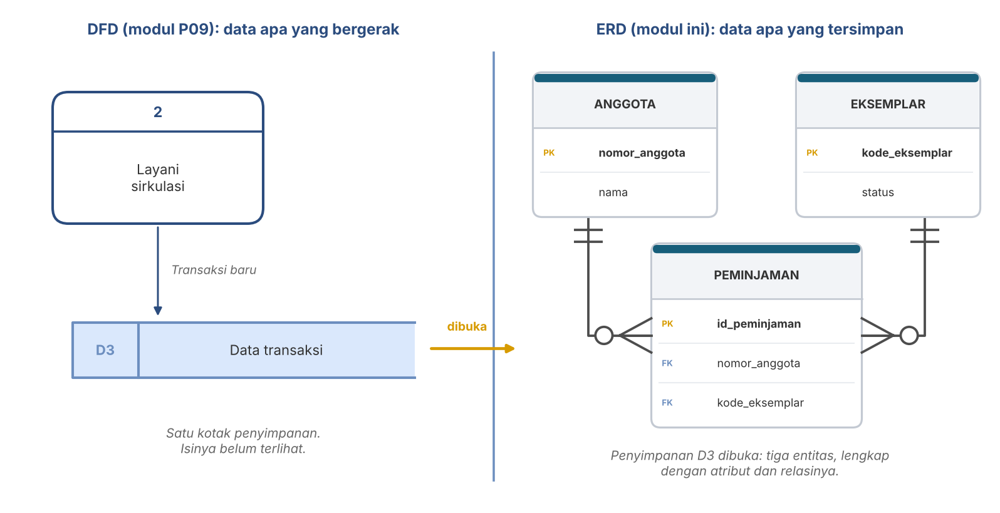
Klik untuk memperbesarChen menggambar untuk pemilik data; crow’s foot menyusul untuk model yang siap dibangun.
Codd: model relasional, data dalam tabel yang disambung kunci.
Chen: model entitas dan relasi, gambar untuk pemilik data.
drawDB, dbdiagram, Mermaid erDiagram: ERD di peramban dan di dokumentasi.
Empat hal yang bertahan sampai sekarang:
Gambar dibicarakan dengan pemilik data, tabel dibangun kemudian.
Chen dipakai untuk gagasan awal.
Crow’s foot dipakai untuk model yang siap diserahkan kepada pembangun.
Mermaid dan drawDB menaruh ERD di dokumentasi dan peramban.
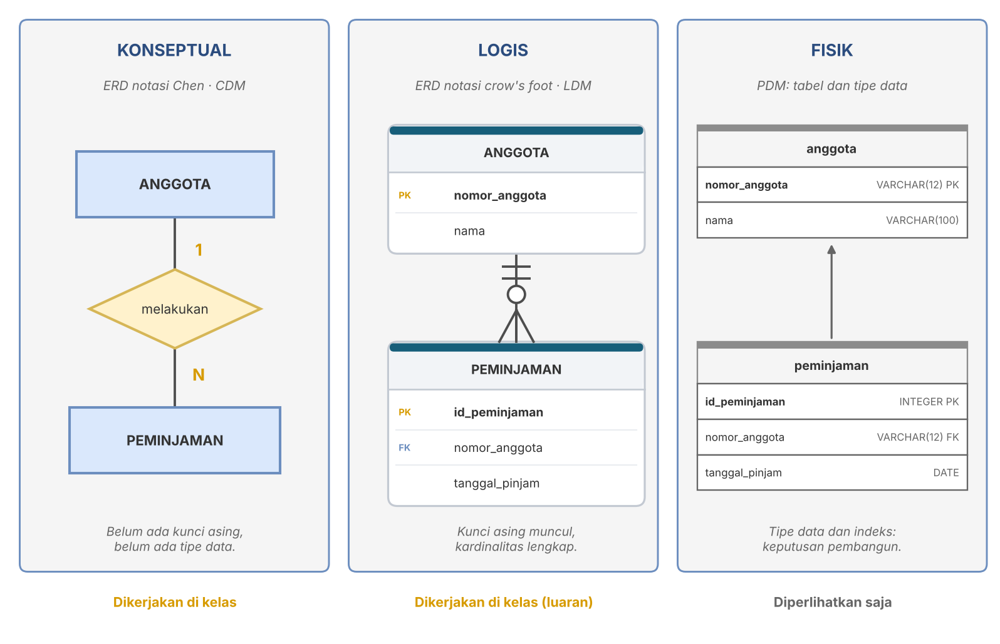
Klik untuk memperbesarCDM, LDM, dan PDM menyebut tingkat isi; Chen dan crow’s foot menyebut cara menggambar.
| Tingkat | Isinya | Notasi di kelas ini | Di mata kuliah ini |
|---|---|---|---|
| Konseptual (CDM) | Entitas, relasi, angka 1, M, N | Chen | Dikerjakan, Bagian F |
| Logis (LDM) | Atribut lengkap, kunci primer dan asing, batas paling sedikit, ternormalkan | Crow’s foot | Dikerjakan, Bagian G sampai I |
| Fisik (PDM) | Tipe data, panjang kolom, indeks | Tabel bertipe data | Dikenali saja, Gambar 3 |
Bukan keduanya. Crow’s foot adalah notasi dan dapat dipakai untuk model logis maupun fisik. Yang membuat model menjadi fisik adalah tipe data, bukan lambangnya.
Pertanyaan pemilah yang sama dengan modul use case.
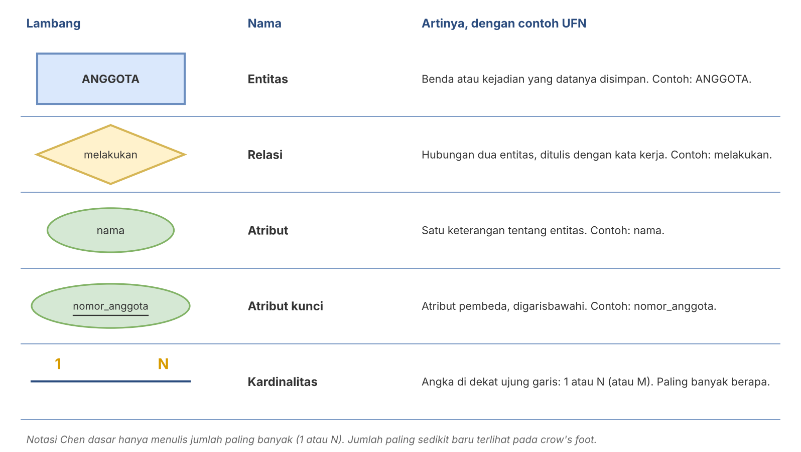
Klik untuk memperbesarKunci primer harus unik dan tetap, untuk semua baris.
| Unsur | Aturan | Keliru | Benar |
|---|---|---|---|
| Entitas | Kata benda tunggal, huruf kapital | DATA_ANGGOTA_PERPUS | ANGGOTA |
| Atribut | Kata benda yang menyebut isi | tgl, data, ket2 | tanggal_jatuh_tempo |
| Relasi | Kata kerja | punya, hubungan | mengajukan, menimbulkan |
| Kunci primer | Unik dan tidak berubah | nama, nomor_telepon | nomor_anggota |
3.200 mahasiswa punya NIM, tetapi 140 dosen tidak. Kunci: nomor_anggota. NIM atau NIP menjadi atribut nomor_induk.
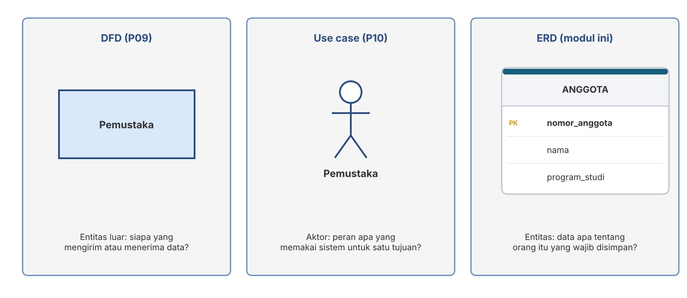
Klik untuk memperbesar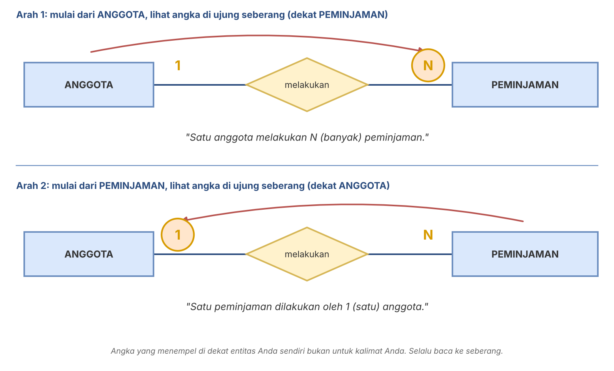
Klik untuk memperbesarContoh: ANGGOTA 1, melakukan, N PEMINJAMAN.
Pilih entitas awal. Ucapkan “Satu anggota”.
Baca belah ketupat: “melakukan”.
Angka di dekat PEMINJAMAN: N, dibaca “banyak peminjaman”.
Pasifkan kata kerjanya. Angka di dekat ANGGOTA: 1. “Satu peminjaman dilakukan oleh satu anggota”.
Satu anggota melakukan banyak peminjaman. Satu peminjaman dilakukan oleh satu anggota. Dua kalimat, satu garis.
Karena itu model konseptual perlu dilanjutkan ke model logis.
Sebagian buku menulis pasangan angka dan membacanya di dekat entitas sendiri. Periksa keterangan bukunya. Modul ini memakai satu aturan saja: baca ke seberang.
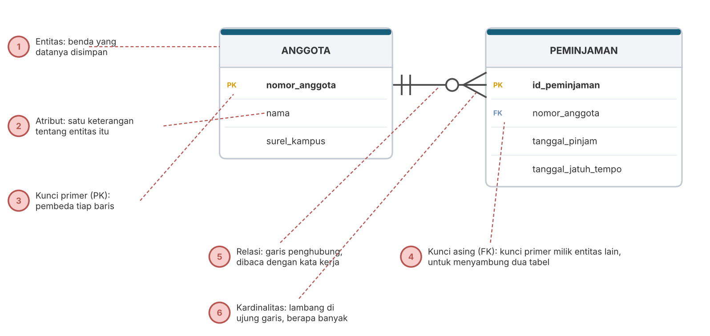
Klik untuk memperbesar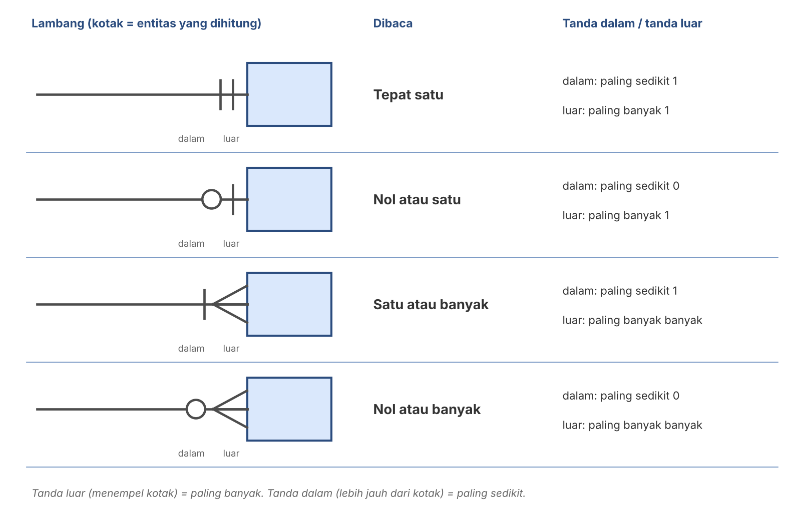
Klik untuk memperbesar| Lambang | Tanda dalam | Tanda luar | Dibaca |
|---|---|---|---|
| Dua garis tegak | satu | satu | tepat satu |
| Lingkaran, garis tegak | nol | satu | nol atau satu |
| Garis tegak, kaki gagak | satu | banyak | satu atau banyak |
| Lingkaran, kaki gagak | nol | banyak | nol atau banyak |
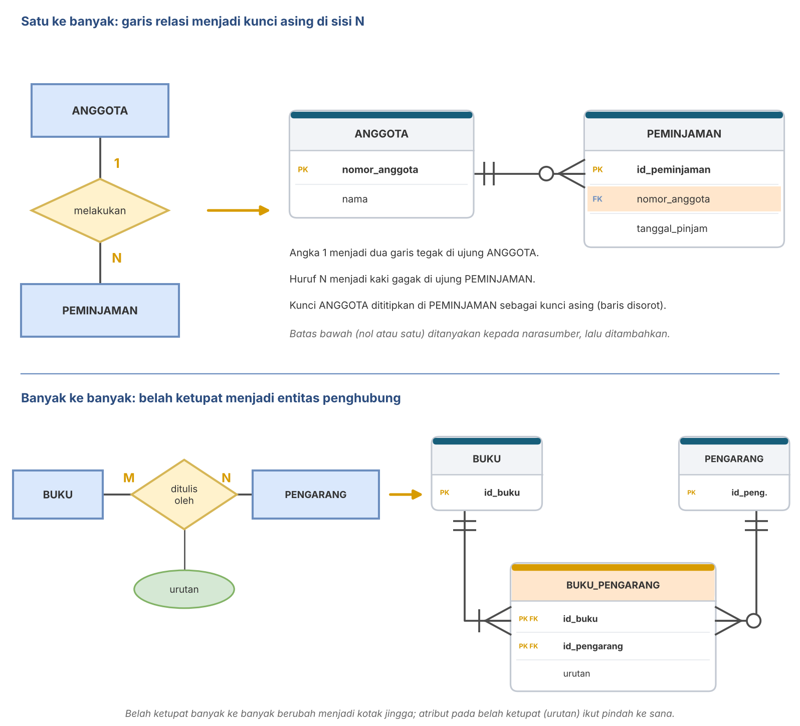
Klik untuk memperbesarBelah ketupat hilang. Angka 1 menunjuk pemilik kunci primer; kunci itu dititipkan ke entitas bertanda N sebagai kunci asing.
Belah ketupat menjadi kotak baru, entitas penghubung. Atribut milik relasi, seperti urutan, ikut pindah ke kotak itu.
Tidak ada belah ketupat yang boleh hilang tanpa jejak.
| Langkah | Pada notasi Chen | Menjadi pada crow’s foot |
|---|---|---|
| 1 Entitas | Persegi panjang | Kotak berkepala, nama sama |
| 2 Atribut | Elips; kunci bergaris bawah | Baris di dalam kotak; kunci diberi PK |
| 3 Relasi 1:N | Angka 1 di satu ujung, N di ujung lain | Kunci asing di entitas sisi N |
| 4 Relasi M:N | Belah ketupat dengan M dan N | Entitas penghubung; atribut relasi ikut pindah |
| 5 Relasi 1:1 dan batas bawah | 1 di kedua ujung; batas bawah tidak tertulis | Kunci asing di entitas yang lahir belakangan; tanda dalam ditanyakan |
Keduanya benar, dipakai pada tingkat yang berbeda. Klik sakelarnya.
Konseptual. Untuk berdiskusi dengan pemilik layanan. Memaksa memikirkan hubungan sebelum kolom. Atribut berada di luar kotak, sehingga gambar cepat penuh. Alat: kertas atau draw.io.
Logis. Model yang siap diserahkan kepada pembangun. Memaksa memutuskan letak kunci asing dan batas paling sedikit. Dipakai dokumentasi skema produk. Alat: draw.io, dengan drawDB sebagai pilihan.
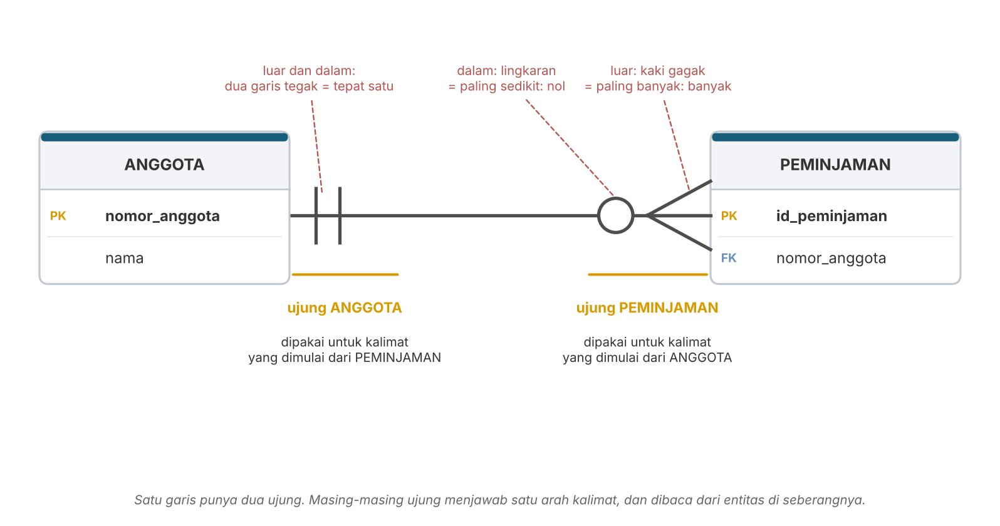
Klik untuk memperbesar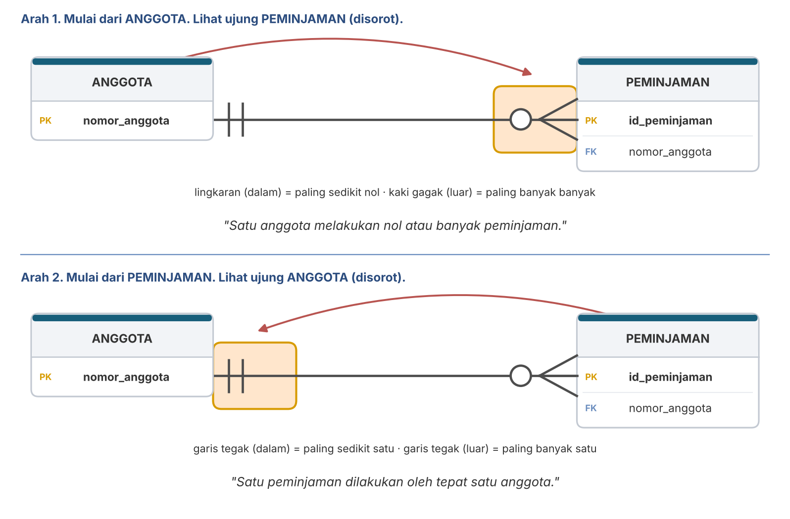
Klik untuk memperbesarKlik kotaknya, lalu ucapkan dengan suara sampai tidak perlu melihat catatan.
Lambang di dekat sebuah kotak menjawab berapa banyak kotak ini, dan pertanyaan itu diajukan dari kotak seberang.
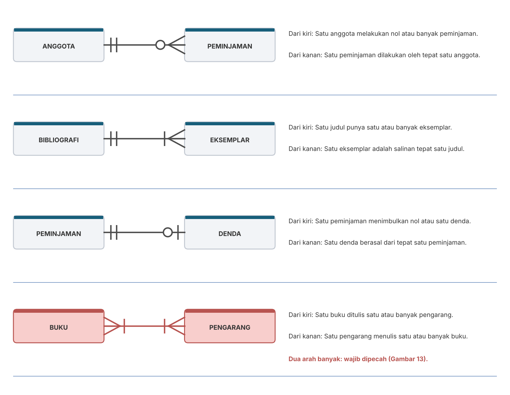
Klik untuk memperbesar| Pasangan | Kiri | Kanan |
|---|---|---|
| ANGGOTA, PEMINJAMAN | tepat satu | nol atau banyak |
| BIBLIOGRAFI, EKSEMPLAR | tepat satu | satu atau banyak |
| PEMINJAMAN, DENDA | tepat satu | nol atau satu |
| BUKU, PENGARANG | satu atau banyak | satu atau banyak |
Belum boleh menjadi tabel. Dipecah dengan BUKU_PENGARANG.
Dengarkan kalimat mahasiswa. Kesalahannya biasanya salah satu dari tiga ini.
| Salah baca | Kalimat keliru | Perbaikan |
|---|---|---|
| Membaca lambang di dekat entitas sendiri | “Satu anggota melakukan tepat satu peminjaman” | Untuk kalimat dari ANGGOTA, lihat ujung PEMINJAMAN |
| Menukar tanda dalam dan luar | “banyak atau nol peminjaman”, dan lingkaran dibaca satu | Tanda dalam dulu untuk paling sedikit, lalu tanda luar untuk paling banyak. Lingkaran selalu nol |
| Menganggap garis satu arah | Hanya satu kalimat dibacakan | Setiap garis selalu menyimpan dua kalimat |
Empat langkah membaca ERD utuh: entitas, relasi dua arah, letak kunci asing, kalimat jujur.
“Sistem ini menyimpan data tentang delapan benda, yaitu ...”
Satu relasi dibaca dua arah dengan aturan baca ke seberang.
“Atribut tarif denda sudah ada tempatnya, tetapi nilainya belum ditanyakan.”
Semua contoh dari layanan perpustakaan.
Satu permohonan bebas pustaka menghasilkan paling banyak satu surat.
Satu surat lahir dari tepat satu permohonan.
Satu judul punya banyak eksemplar.
Satu eksemplar salinan dari satu judul saja.
Satu buku ditulis beberapa pengarang.
Satu pengarang menulis beberapa buku.
Lambangnya ditentukan aturan layanan, bukan aturan teknik.
| Pertanyaan | Jawaban | Lambang |
|---|---|---|
| Anggota tanpa pernah meminjam? | Boleh. Mahasiswa baru diimpor sebelum datang. | Nol atau banyak di PEMINJAMAN |
| Peminjaman tanpa anggota? | Tidak. | Tepat satu di ANGGOTA |
| Setiap peminjaman berdenda? | Tidak, hanya yang terlambat. | Nol atau satu di DENDA |
| Judul tanpa eksemplar? | Belum diwawancarai. Sementara: tidak boleh. | Satu atau banyak, ditandai untuk ditanyakan |
Tanda yang belum punya sumber ditulis apa adanya dan ditandai, tidak diisi dugaan.
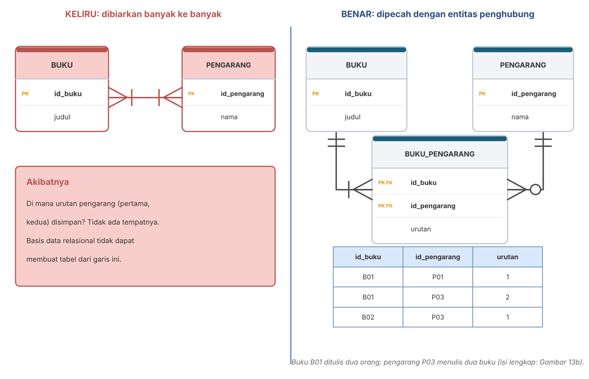
Klik untuk memperbesarDua huruf berbeda karena jumlah di kedua sisi tidak harus sama.
| Pasangan | Dari kiri | Dari kanan | Tabel penghubung |
|---|---|---|---|
| Buku dan pengarang | Satu buku, banyak pengarang | Satu pengarang, banyak buku | BUKU_PENGARANG |
| Buku dan tajuk subjek | Satu buku, beberapa tajuk | Satu tajuk, banyak buku | BUKU_SUBJEK |
| Anggota dan eksemplar | Satu anggota, banyak eksemplar | Satu eksemplar, banyak anggota | PEMINJAMAN |
| Tugas akhir dan unit | Satu tugas akhir, lima unit | Satu unit, banyak tugas akhir | PERSETUJUAN |
Satu baris mencatat satu hal. Satu sel berisi satu nilai. Kunci primer tidak pernah sama. N:M tidak muat dalam dua tabel tanpa melanggar salah satunya.
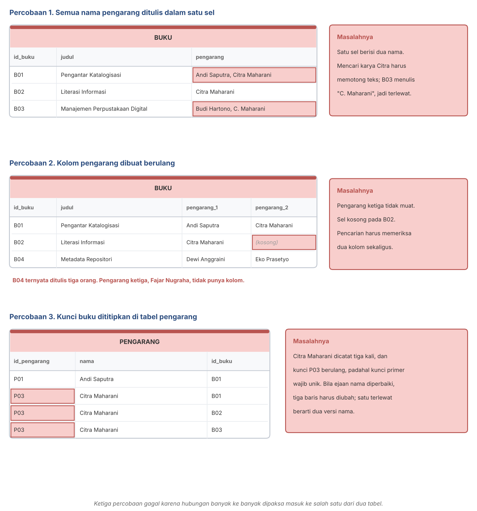
Klik untuk memperbesarPencarian melewatkan “C. Maharani”.
Pengarang ketiga tidak punya kolom.
Nama Citra ditulis tiga kali, dan kunci P03 berulang.
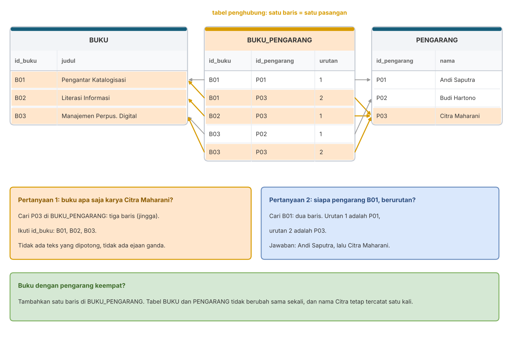
Klik untuk memperbesarTanyakan “boleh berapa?” dari dua arah, persis seperti pada buku dan pengarang.
| Pertanyaan | Buku dan pengarang (Gambar 13b) | Anggota dan eksemplar |
|---|---|---|
| Dari kiri: boleh berapa? | Satu buku ditulis banyak pengarang | Satu anggota meminjam banyak eksemplar sepanjang waktu |
| Dari kanan: boleh berapa? | Satu pengarang menulis banyak buku | Satu eksemplar dipinjam banyak anggota secara bergantian |
| Kesimpulan | Banyak ke banyak, perlu tabel penghubung | Banyak ke banyak, perlu tabel penghubung |
| Nama tabel penghubungnya | BUKU_PENGARANG | PEMINJAMAN |
| Yang dicatat pada setiap pasangan | urutan pengarang | tanggal pinjam, jatuh tempo, tanggal kembali |
| Bolehkah pasangan yang sama tercatat dua kali? | Tidak. B01 dan P03 cukup satu baris | Boleh. Sari dapat meminjam E0412 lagi bulan depan |
Pasangan yang sama boleh muncul lagi, jadi tabel ini perlu kunci sendiri.
| id_peminjaman | nomor_anggota | kode_eksemplar | tanggal_pinjam | jatuh_tempo |
|---|---|---|---|---|
| PJ001 | A01 (Sari Wulandari) | E0412 (Ekologi Hutan Tropis) | 2026-09-02 | 2026-09-09 |
| PJ002 | A01 (Sari Wulandari) | E0877 (Kimia Dasar) | 2026-09-02 | 2026-09-09 |
| PJ003 | A02 (Andi Pratama) | E0877 (Kimia Dasar) | 2026-09-12 | 2026-09-19 |
| PJ004 | A01 (Sari Wulandari) | E0412 (Ekologi Hutan Tropis) | 2026-10-05 | 2026-10-12 |
Setiap pasangan dicatat sekali. Kuncinya gabungan id_buku dan id_pengarang.
Pasangan boleh berulang, lihat PJ001 dan PJ004, jadi diberi kunci sendiri id_peminjaman.
Foreign key. Bila ditaruh di sisi satu, kejadiannya hanya dapat dicatat sekali.
Satu anggota hanya punya satu kolom untuk itu.
Akibatnya ia hanya dapat meminjam sekali seumur hidup.
Satu anggota dapat muncul di sebanyak apa pun baris peminjaman.
Kunci asing berada di sisi bertanda banyak, sehingga setiap kejadian baru menambah satu baris.
Kunci asing di entitas yang lahir belakangan, yaitu id_permohonan di SURAT.
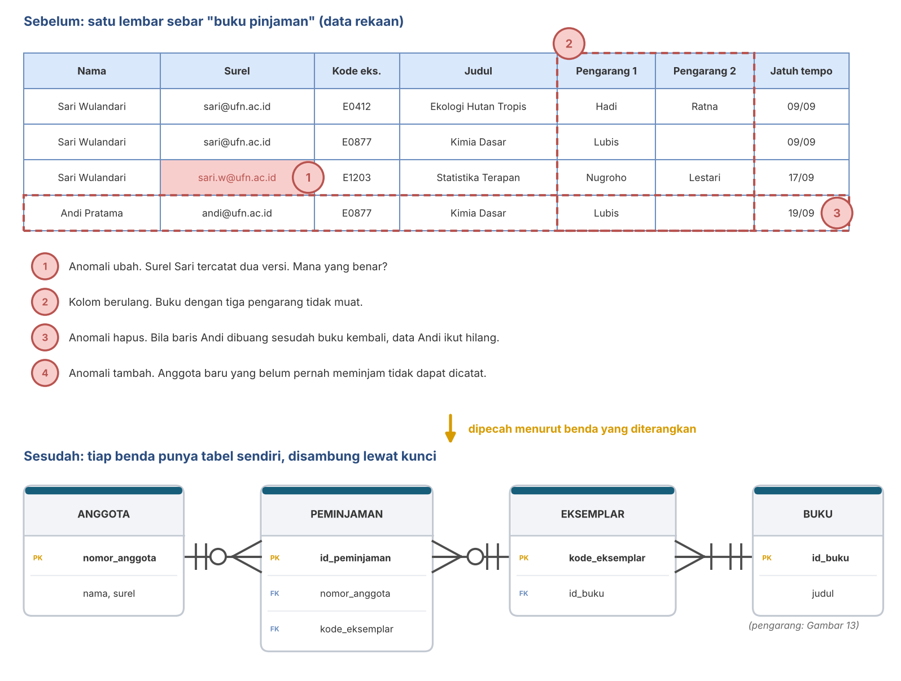
Klik untuk memperbesarTiga pertanyaan uji, diringkas dari William Kent (1983): tentang kunci, seluruh kunci, dan hanya kunci.
| Tahap | Pertanyaan uji | Gejala bila dilanggar | Perbaikan |
|---|---|---|---|
| 1NF tentang kunci | Apakah setiap sel berisi satu nilai, tanpa kolom berulang? | Kolom pengarang1, pengarang2; satu sel berisi dua nama | Pecah menjadi tabel sendiri dengan tabel penghubung |
| 2NF seluruh kunci | Pada kunci dua kolom, apakah setiap kolom lain bergantung pada keduanya? | Judul tertulis berulang di BUKU_PENGARANG | Kembalikan kolom ke tabel yang kuncinya cukup satu |
| 3NF hanya kunci | Apakah ada kolom yang sebenarnya menerangkan kolom lain, bukan kunci? | Tarif denda tertulis di setiap baris ANGGOTA | Pindahkan ke tabel milik kolom yang diterangkannya |
Bila satu fakta harus diubah di lebih dari satu baris, tabelnya belum normal.
Pertanyaan uji: apakah ada kolom berulang, atau sel yang berisi lebih dari satu nilai?
| id_buku | judul | pengarang1 | pengarang2 |
|---|---|---|---|
| B01 | Pengantar Katalogisasi | Andi Saputra | Citra Maharani |
| B02 | Literasi Informasi | Citra Maharani | kosong |
| B03 | Manajemen Perpus. Digital | Budi Hartono | Citra Maharani |
Gejalanya. Buku dengan tiga pengarang memaksa kolom pengarang3. Nama Citra Maharani ditulis tiga kali, bisa dengan ejaan berbeda. Mencari karya Citra harus memeriksa dua kolom.
Isinya persis Gambar 13b. Pengarang keempat cukup satu baris baru.
Pertanyaan uji: pada kunci dua kolom, apakah setiap kolom lain bergantung pada keduanya?
| id_buku | id_pengarang | urutan | judul |
|---|---|---|---|
| B01 | P01 | 1 | Pengantar Katalogisasi |
| B01 | P03 | 2 | Pengantar Katalogisasi |
| B02 | P03 | 1 | Literasi Informasi |
| B03 | P02 | 1 | Manajemen Perpus. Digital |
| B03 | P03 | 2 | Manajemen Perpus. Digital |
Gejalanya. Judul cukup ditentukan id_buku, tidak perlu id_pengarang. Judul B01 dikoreksi berarti mengubah dua baris; satu terlewat, katalog berselisih.
Kolom urutan lulus uji: urutan Citra Maharani di B01 adalah 2, di B02 adalah 1. Nilainya baru pasti bila buku dan pengarang sama-sama diketahui.
Pertanyaan uji: adakah kolom yang sebenarnya menerangkan kolom lain, bukan kunci?
| nomor_anggota | nama | kode_jenis | nama_jenis | tarif_denda_per_hari |
|---|---|---|---|---|
| A01 | Sari Wulandari | MHS | Mahasiswa | tarif mahasiswa |
| A02 | Andi Pratama | MHS | Mahasiswa | tarif mahasiswa |
| D01 | Rahmat Hidayat | DSN | Dosen | tarif dosen |
Gejalanya. Nama jenis dan tarif ditentukan oleh kode_jenis, bukan oleh anggotanya. Tarif naik berarti mengubah setiap baris mahasiswa. Satu baris terlewat, dua mahasiswa yang terlambat sama lama membayar berbeda.
| nomor_anggota | nama | kode_jenis |
|---|---|---|
| A01 | Sari Wulandari | MHS |
| A02 | Andi Pratama | MHS |
| D01 | Rahmat Hidayat | DSN |
| kode_jenis | nama_jenis | tarif_denda_per_hari |
|---|---|---|
| MHS | Mahasiswa | belum diwawancarai |
| DSN | Dosen | belum diwawancarai |
Tarif berubah, cukup satu baris.
Kecuali dokumen yang isinya harus beku.
Menyimpannya menghasilkan dua versi kebenaran.
Surat bebas pustaka yang sudah terbit memuat nama dan NIM saat itu.
Alasannya ditulis di kamus data. Keputusan pemilik, karena menyangkut keabsahan dokumen.
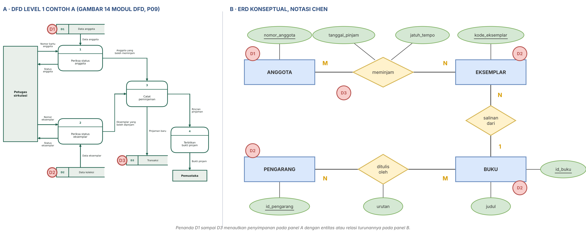
Klik untuk memperbesar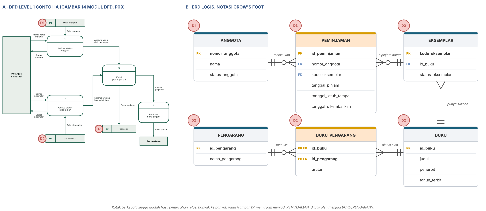
Klik untuk memperbesarLima langkah Bagian H.2, dengan potongan tabel J.4.
| Garis | Dari kiri atau atas | Dari kanan atau bawah |
|---|---|---|
| ANGGOTA, PEMINJAMAN | Satu anggota melakukan nol atau banyak peminjaman. | Satu peminjaman dilakukan oleh tepat satu anggota. |
| EKSEMPLAR, PEMINJAMAN | Satu eksemplar dipinjam dalam nol atau banyak peminjaman. | Satu peminjaman mencatat tepat satu eksemplar. |
| BUKU, EKSEMPLAR | Satu buku punya satu atau banyak eksemplar. | Satu eksemplar salinan tepat satu buku. |
| PENGARANG, BUKU_PENGARANG | Satu pengarang tercatat pada nol atau banyak pasangan. | Satu pasangan menunjuk tepat satu pengarang. |
Lima label sumber untuk kasus UFN.
Kalimat Ibu Rina, dengan nomor temuan.
Penyimpanan atau aliran Gambar 12 dan 17 modul DFD.
Kata benda US-01 sampai US-10 dan kriterianya.
Alur baku atau skema SLiMS, berstatus dugaan.
Tempat siap, isi belum ditanyakan.
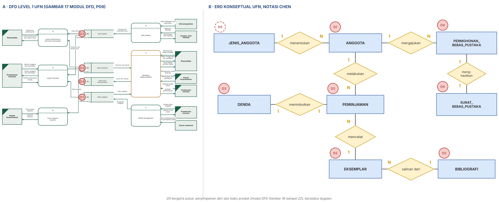
Klik untuk memperbesar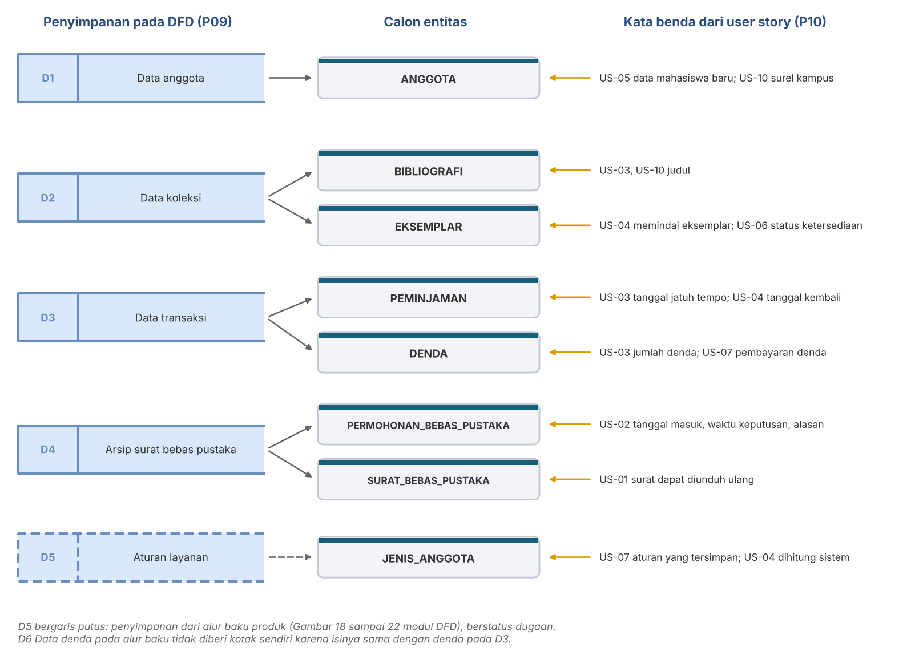
Klik untuk memperbesarPertanyaan ini pasti diajukan pembaca, jadi jawabannya ditulis.
| Calon | Keputusan | Alasan |
|---|---|---|
| Laporan layanan (US-08) | Bukan entitas | Dihitung dari PEMINJAMAN dan DENDA; bentuknya belum ditanyakan |
| Hasil impor (US-05) | Sementara bukan | Kriteria meminta dilaporkan, belum meminta riwayat disimpan |
| Petugas yang melayani | Belum diwawancarai | Tidak ada story yang memintanya |
| Sistem akademik | Bukan entitas | Entitas luar; datanya masuk ke ANGGOTA lewat impor |
| Usulan koleksi, kunjungan | Tidak digambar | Tidak ada asal pada DFD, story, atau wawancara |
Inilah alasan modul use case diajarkan sebelum pertemuan ini.
| User story | Kata benda | Menjadi |
|---|---|---|
| US-02 Kepala menyetujui daring | tanggal masuk, waktu keputusan, alasan penolakan | atribut PERMOHONAN |
| US-03 melihat tanggungan sendiri | judul, tanggal jatuh tempo, jumlah denda | atribut BIBLIOGRAFI, PEMINJAMAN, DENDA |
| US-04 memindai kartu dan eksemplar | tanggal kembali dihitung sistem | lama_pinjam_hari di JENIS_ANGGOTA |
| US-05 data dari akademik | data mahasiswa baru | nomor_induk, nama, program_studi, angkatan, surel_kampus |
| US-07 pengembalian dan denda | aturan tersimpan, pembayaran | JENIS_ANGGOTA; status_bayar, tanggal_bayar |
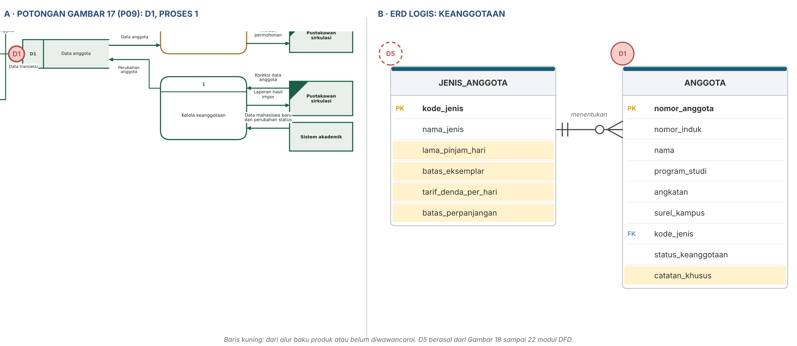
Klik untuk memperbesar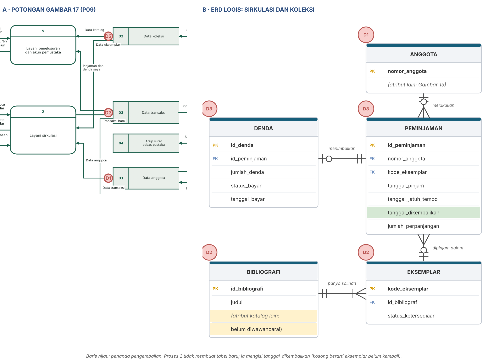
Klik untuk memperbesarProses di DFD adalah kata kerja, ERD menyimpan kata benda. Pengembalian mengisi kolom yang sudah disiapkan.
| Tabel dan kolom | Sebelum kembali | Sesudah kembali |
|---|---|---|
| PEMINJAMAN PJ003 tanggal_dikembalikan | kosong | 2026-09-23 |
| EKSEMPLAR E0877 status_ketersediaan | dipinjam | tersedia |
| DENDA | belum ada baris | baris baru D0012 untuk PJ003, terlambat 4 hari |
tanggal_dikembalikan kosong berarti masih di tangan peminjam, terisi berarti sudah kembali. Tidak ada baris baru di tabel PEMINJAMAN.
Ketiga perubahan disimpan bersama, atau tidak sama sekali.
| Kegiatan | PEMINJAMAN | EKSEMPLAR | DENDA |
|---|---|---|---|
| Meminjam | C buat baris | U ubah status | tidak |
| Mengembalikan | U isi tanggal | U ubah status | C bila terlambat |
| Melunasi denda | R baca | tidak | U ubah status |
C berarti create atau buat, R berarti read atau baca, U berarti update atau ubah. Yang dipastikan pustakawan: setiap langkah pengembalian pada DFD punya kolom tempat hasilnya disimpan.
-- Andi mengembalikan E0877, 23 September 2026
BEGIN;
UPDATE peminjaman
SET tanggal_dikembalikan = '2026-09-23'
WHERE id_peminjaman = 'PJ003';
UPDATE eksemplar
SET status_ketersediaan = 'tersedia'
WHERE kode_eksemplar = 'E0877';
-- hanya bila lewat jatuh tempo (2026-09-19)
INSERT INTO denda (id_denda, id_peminjaman, status_bayar)
VALUES ('D0012', 'PJ003', 'belum');
COMMIT;
-- daftar eksemplar yang masih dipinjam
SELECT * FROM peminjaman
WHERE tanggal_dikembalikan IS NULL;Bila pengembalian membawa keterangan sendiri yang tidak dapat ditempel pada satu baris PEMINJAMAN.
| Pertanyaan untuk pustakawan sirkulasi | Bila jawabannya ya | UFN |
|---|---|---|
| Apakah petugas yang menerima buku dicatat? | Tambah kolom petugas_penerima pada PEMINJAMAN | Belum diwawancarai |
| Apakah kondisi buku saat kembali dicatat? | Kolom kondisi_kembali. Bila satu pengembalian dapat punya beberapa catatan kerusakan, entitas sendiri | Belum diwawancarai |
| Apakah satu struk pengembalian mencakup beberapa eksemplar? | Entitas PENGEMBALIAN, satu struk, yang menunjuk banyak baris PEMINJAMAN | Belum diwawancarai |
| Apakah buku boleh dikembalikan lewat kotak atau di perpustakaan lain? | Kolom lokasi_kembali | Belum diwawancarai |
SLiMS mencatat pengembalian di tabel loan juga, lewat is_return dan return_date. Koha memindahnya ke tabel riwayat.
Selama keempat pertanyaan belum dijawab ya, tanggal_dikembalikan sudah cukup.
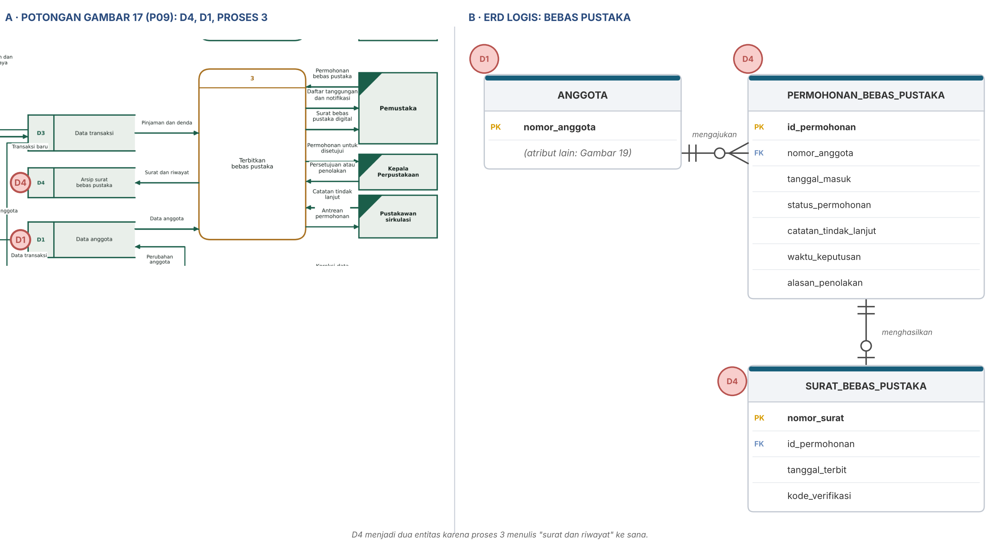
Klik untuk memperbesar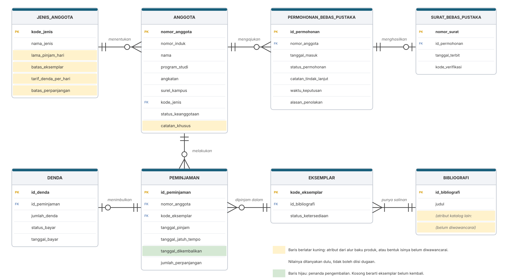
Klik untuk memperbesarAturan baca ke seberang: mulai dari satu baris di tabel asal, lalu baca lambang yang menempel di tabel tujuan.
| Garis | Dibaca dari tabel kiri atau atas | Dibaca dari tabel kanan atau bawah | Kunci asing ada di |
|---|---|---|---|
| JENIS_ANGGOTA ke ANGGOTA menentukan | Satu jenis anggota menentukan nol atau banyak anggota. Jenis yang baru dibuat boleh belum punya anggota. | Satu anggota termasuk tepat satu jenis anggota. | ANGGOTA kode_jenis |
| ANGGOTA ke PERMOHONAN mengajukan | Satu anggota mengajukan nol atau banyak permohonan: boleh belum pernah, boleh mengulang sesudah ditolak. | Satu permohonan diajukan oleh tepat satu anggota. | PERMOHONAN nomor_anggota |
| PERMOHONAN ke SURAT menghasilkan | Satu permohonan menghasilkan nol atau satu surat. Permohonan yang ditolak tidak menghasilkan surat. | Satu surat lahir dari tepat satu permohonan. | SURAT id_permohonan |
| ANGGOTA ke PEMINJAMAN melakukan | Satu anggota melakukan nol atau banyak peminjaman. | Satu peminjaman dilakukan oleh tepat satu anggota. | PEMINJAMAN nomor_anggota |
Lanjutan. Perhatikan garis DENDA, arah bacanya terbalik dari yang lain.
| Garis | Dibaca dari tabel kiri atau atas | Dibaca dari tabel kanan atau bawah | Kunci asing ada di |
|---|---|---|---|
| DENDA ke PEMINJAMAN menimbulkan | Satu denda berasal dari tepat satu peminjaman. | Satu peminjaman menimbulkan nol atau satu denda. Kembali tepat waktu berarti tidak ada denda. | DENDA id_peminjaman |
| PEMINJAMAN ke EKSEMPLAR dipinjam dalam | Satu peminjaman mencatat tepat satu eksemplar. | Satu eksemplar dipinjam dalam nol atau banyak peminjaman, bergantian sepanjang waktu. | PEMINJAMAN kode_eksemplar |
| EKSEMPLAR ke BIBLIOGRAFI punya salinan | Satu eksemplar adalah salinan dari tepat satu judul. | Satu judul punya satu atau banyak eksemplar. Judul baru dicatat bila eksemplarnya ada. | EKSEMPLAR id_bibliografi |
Dua garis tegak berarti tepat satu. Lingkaran dan garis berarti nol atau satu. Lingkaran dan kaki gagak berarti nol atau banyak. Garis dan kaki gagak berarti satu atau banyak.
Keanggotaan dan sirkulasi. Kisah Andi Pratama: meminjam Kimia Dasar, lalu terlambat mengembalikan.
satu jenis beserta aturannya
satu orang anggota
sekali pinjam satu eksemplar
satu buku fisik di rak
Andi terlambat empat hari, lalu mengajukan surat bebas pustaka pada November.
satu judul, data katalog
denda dari satu peminjaman
satu kali mengajukan
satu surat yang terbit
Tiga keputusan rancangan yang ditanyakan mahasiswa.
Permohonan yang ditolak tetap tersimpan beserta alasannya (US-02), meski tidak pernah menjadi surat.
Bentuknya belum diwawancarai. Bila satu anggota dapat punya banyak catatan bertanggal, ia menjadi entitas.
Sudah punya tempat di JENIS_ANGGOTA. Nilainya ditanyakan kepada Kepala, tidak diisi dugaan.
Lima kolom untuk setiap atribut. Potongan PEMINJAMAN dan DENDA.
| Atribut | Arti | Contoh | Wajib | Asal |
|---|---|---|---|---|
| tanggal_jatuh_tempo | Dihitung dari lama pinjam jenis anggota | 2026-09-09 | Ya | US-03, US-04 |
| tanggal_dikembalikan | Kosong selama belum kembali | 2026-09-11 | Tidak | D3; Gambar 19 P09 |
| jumlah_perpanjangan | Berapa kali diperpanjang | 1 | Ya | Temuan 1 |
| jumlah_denda | Dari keterlambatan dan tarif | menunggu tarif | Ya | US-03, US-07 |
| status_bayar | Belum lunas atau lunas | lunas | Ya | Aliran pelunasan denda |
Dublin Core dan MARC 21 sudah menyediakannya.
| Calon atribut | Dublin Core | MARC 21 | Status UFN |
|---|---|---|---|
| judul | title | 245 $a | US-03, US-10 |
| pengarang | creator | 100 $a, 700 $a | Belum diwawancarai |
| penerbit, tahun | publisher, date | 264 $b, $c | Belum diwawancarai |
| ISBN | identifier | 020 $a | Belum diwawancarai |
| subjek | subject | 650 $a | Belum diwawancarai |
| kode eksemplar | tidak ada | format Holdings | US-04, US-06 |
Empat pernyataan yang diucapkan pengampu.
SLiMS produk sumber terbuka yang sudah jadi, bukan objek praktikum.
Penyusun bukan tim pengembangnya. Gambar bukan dokumen perancangan SLiMS.
Nama kolom dapat berbeda pada versi mitra, dan dibuktikan saat demonstrasi.
Koha dan INLISLite dibaca dengan cara yang persis sama.
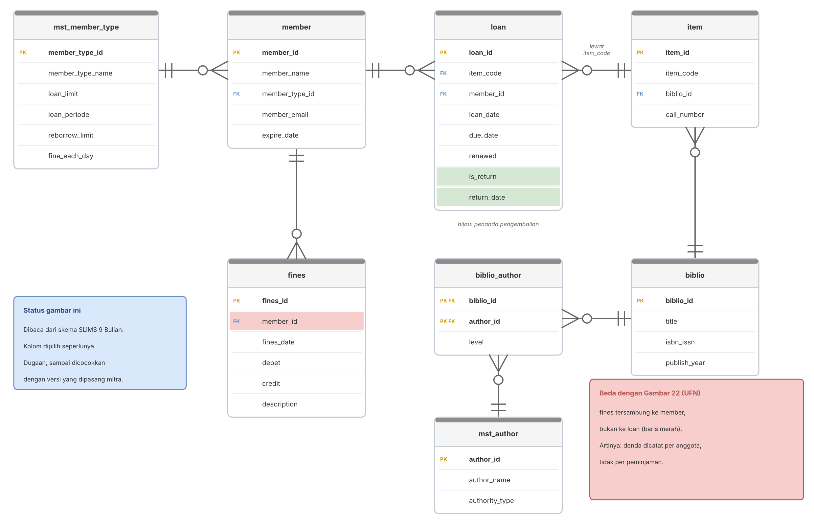
Klik untuk memperbesarTujuan Gambar 23: mencocokkan kebutuhan UFN dengan isi produk sebelum produk dipilih.
| Tabel SLiMS | Artinya | Padanan di Gambar 22 | Kolom yang perlu dikenali |
|---|---|---|---|
| mst_member_type awalan mst_ berarti master | Jenis anggota. Master berarti data acuan yang jarang berubah. | JENIS_ANGGOTA | loan_limit batas eksemplar. loan_periode lama pinjam. reborrow_limit batas perpanjangan. fine_each_day tarif denda per hari. |
| member | Anggota | ANGGOTA | member_name nama. member_email surel. expire_date tanggal keanggotaan berakhir. |
| loan | Peminjaman | PEMINJAMAN | loan_date tanggal pinjam. due_date jatuh tempo. renewed jumlah perpanjangan. is_return sudah kembali atau belum. return_date tanggal kembali. |
| item | Eksemplar, buku fisik | EKSEMPLAR | item_code kode eksemplar pada barkode. call_number nomor panggil. |
Lanjutan. Koleksi, pengarang, dan denda.
| Tabel SLiMS | Artinya | Padanan di Gambar 22 | Kolom yang perlu dikenali |
|---|---|---|---|
| biblio | Bibliografi, data judul | BIBLIOGRAFI | title judul. isbn_issn ISBN atau ISSN. publish_year tahun terbit. |
| biblio_author tabel penghubung | Pasangan judul dan pengarang | belum ada, mirip BUKU_PENGARANG | level peran pengarang, misalnya pengarang utama atau tambahan. Dugaan. |
| mst_author awalan mst_ berarti master | Daftar pengarang | belum ada, mirip PENGARANG | author_name nama pengarang. authority_type jenis nama: orang, badan, atau pertemuan. Dugaan. |
| fines | Denda | DENDA | fines_date tanggal denda. debet jumlah yang dikenakan. credit jumlah yang dibayar. description keterangan berupa teks. |
Berarti sama seperti pada Gambar 22. Yang berbeda hanya bahasa nama kolomnya: SLiMS memakai bahasa Inggris, rancangan UFN memakai bahasa Indonesia.
Cara bacanya sama dengan Gambar 22. Perhatikan baris keempat dan kelima, di situ SLiMS berbeda dari kebutuhan UFN.
| Garis pada Gambar 23 | Dibaca dari tabel kiri atau atas | Dibaca dari tabel kanan atau bawah | Kunci asing ada di |
|---|---|---|---|
| mst_member_type ke member | Satu jenis anggota berlaku untuk nol atau banyak member. | Satu member punya tepat satu jenis anggota. | member member_type_id |
| member ke loan | Satu member punya nol atau banyak loan. | Satu loan milik tepat satu member. | loan member_id |
| loan ke item lewat item_code | Satu loan mencatat tepat satu item. | Satu item muncul di nol atau banyak loan. Pencocokannya lewat item_code, bukan item_id. | loan item_code |
| item ke biblio | Satu item adalah salinan dari tepat satu biblio. | Satu biblio punya nol atau banyak item. Beda dengan UFN: judul boleh tanpa eksemplar. | item biblio_id |
Lanjutan. Baris pertama di sini adalah celah yang paling menentukan.
| Garis pada Gambar 23 | Dibaca dari tabel kiri atau atas | Dibaca dari tabel kanan atau bawah | Kunci asing ada di |
|---|---|---|---|
| member ke fines | Satu member punya nol atau banyak baris fines. | Satu baris fines milik tepat satu member. Tidak ada kolom yang menunjuk loan. | fines member_id |
| biblio_author ke biblio | Satu baris biblio_author menunjuk tepat satu biblio. | Satu biblio tercatat pada nol atau banyak baris biblio_author. | biblio_author biblio_id |
| biblio_author ke mst_author | Satu baris biblio_author menunjuk tepat satu pengarang. | Satu pengarang tercatat pada nol atau banyak baris biblio_author. | biblio_author author_id |
Dua garis tegak berarti tepat satu. Lingkaran dan garis berarti nol atau satu. Lingkaran dan kaki gagak berarti nol atau banyak. Garis dan kaki gagak berarti satu atau banyak.
Keanggotaan dan sirkulasi. Bandingkan dengan slide contoh isi UFN.
jenis anggota beserta aturannya
satu orang anggota
sekali pinjam satu eksemplar
satu buku fisik di rak
Perhatikan apa yang tersimpan, dan apa yang tidak, di baris fines.
satu baris denda
pasangan judul dan pengarang
satu pengarang
satu judul
fines menyimpan member_id, tetapi tidak menyimpan loan_id. DENDA pada UFN menyimpan PJ003, sehingga judul dan jatuh temponya dapat ditelusuri. Kriteria US-03 karena itu dibuktikan pada demonstrasi.
Gambar 22 lawan Gambar 23. Baris merah dibawa ke meja demonstrasi.
| Kebutuhan UFN | Skema SLiMS | Dugaan |
|---|---|---|
| JENIS_ANGGOTA dengan aturan | mst_member_type | Sudah tersedia |
| PEMINJAMAN ke EKSEMPLAR | loan ke item lewat item_code | Sudah tersedia |
| DENDA ke PEMINJAMAN | fines ke member; judul di description | Perlu diperiksa: US-03, US-07 |
| PERMOHONAN dan SURAT | Tidak ada di skema inti | Perlu tambahan mitra |
| Pengarang ganda | biblio_author, mst_author | Sudah tersedia |
UU 27/2022 Pasal 16 ayat (2) huruf a dan g.
| Atribut | Untuk apa | Masa simpan |
|---|---|---|
| nama, nomor_induk | Mengenali anggota | Selama aktif; sesudah lulus belum diwawancarai |
| surel_kampus | Pemberitahuan US-10 | Sama dengan di atas |
| Riwayat PEMINJAMAN | Pelayanan dan laporan | Belum diputuskan |
| Fotokopi kartu | Tidak ada alasan tercatat | Tidak dibuat atributnya |
Agama, nama ibu kandung, alamat rumah, tanggal lahir. Data yang tidak dibutuhkan layanan tidak disimpan.
Dua ERD dan satu tabel pasangan kolom.
Digambar mitra dari basis data lama. Belum diketahui.
Kolom lama dipasangkan dengan kolom baru, satu per satu.
Gambar 22, diperiksa perpustakaan.
Itulah data yang hilang bila tidak diputuskan sekarang, sebelum kontrak ditandatangani.
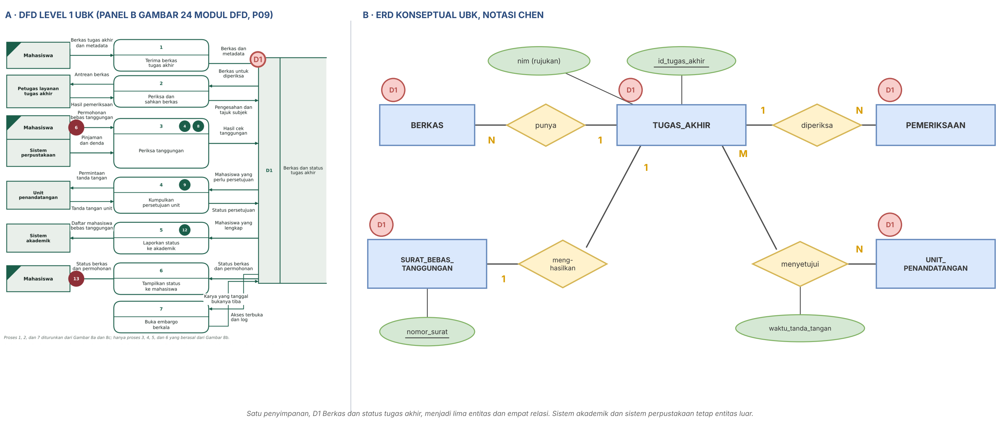
Klik untuk memperbesar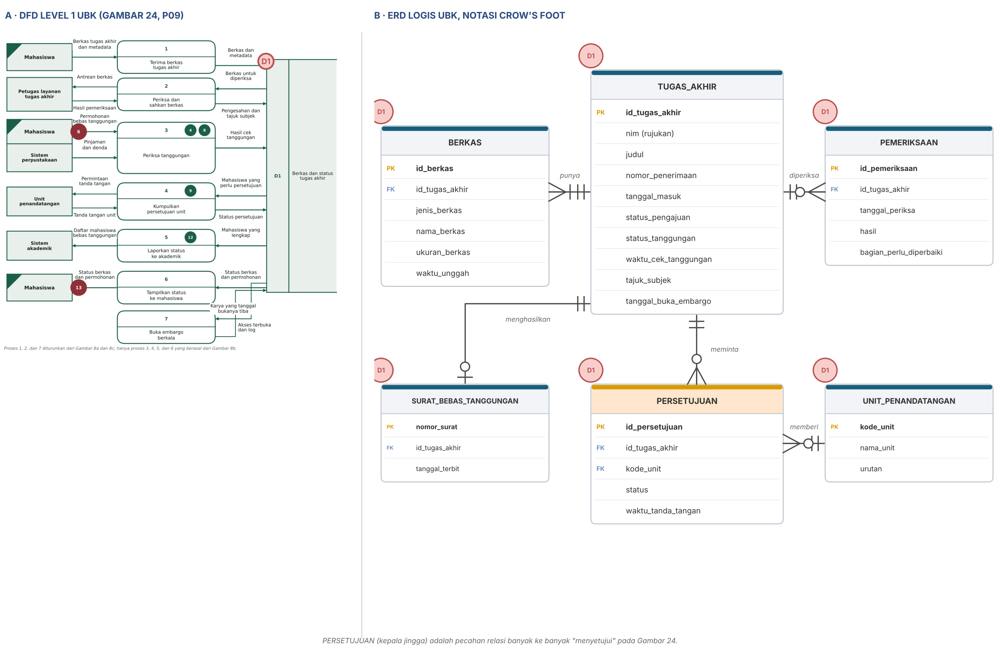
Klik untuk memperbesarAturan yang sama dengan kasus UFN.
| Garis pada Gambar 25 | Dibaca dari tabel kiri atau atas | Dibaca dari tabel kanan atau bawah | Kunci asing ada di |
|---|---|---|---|
| BERKAS ke TUGAS_AKHIR punya | Satu berkas milik tepat satu tugas akhir. | Satu tugas akhir punya satu atau banyak berkas: PDF naskah, lembar pengesahan, surat embargo. | BERKAS id_tugas_akhir |
| TUGAS_AKHIR ke PEMERIKSAAN diperiksa | Satu tugas akhir diperiksa nol atau banyak kali, rata-rata dua kali bolak-balik. | Satu pemeriksaan atas tepat satu tugas akhir. | PEMERIKSAAN id_tugas_akhir |
| TUGAS_AKHIR ke PERSETUJUAN meminta | Satu tugas akhir meminta nol atau banyak persetujuan. | Satu persetujuan untuk tepat satu tugas akhir. | PERSETUJUAN id_tugas_akhir |
| PERSETUJUAN ke UNIT_PENANDATANGAN memberi | Satu persetujuan diberikan oleh tepat satu unit. | Satu unit memberi nol atau banyak persetujuan. | PERSETUJUAN kode_unit |
| TUGAS_AKHIR ke SURAT_BEBAS_TANGGUNGAN menghasilkan | Satu tugas akhir menghasilkan nol atau satu surat. Surat terbit hanya bila tanggungan nihil. | Satu surat untuk tepat satu tugas akhir. | SURAT id_tugas_akhir |
Satu tugas akhir, TA0412, dari unggah berkas sampai pemeriksaan.
satu pengajuan tugas akhir
satu berkas yang diunggah
satu kali diperiksa
Lanjutan kisah TA0412, dari tanda tangan unit sampai surat bebas tanggungan.
tanda tangan satu unit
satu unit dalam urutan
satu surat yang terbit
Membeli produk jadi, atau membangun sendiri.
| UFN Opsi D | UBK Opsi A | |
|---|---|---|
| Fungsi ERD | Alat ukur terhadap skema produk | Spesifikasi model data untuk pengembang |
| Pembaca utama | Mitra pendamping, tim pengadaan | Pengembang unit TIK |
| Yang diuji kemudian | Produk menyimpan data yang dibutuhkan dan data dapat dibawa keluar | Tabel yang dibangun sesuai rancangan dan kamus data |
| Risiko bila keliru | Celah ketahuan sesudah dipakai | Tabel dibangun dari dugaan |
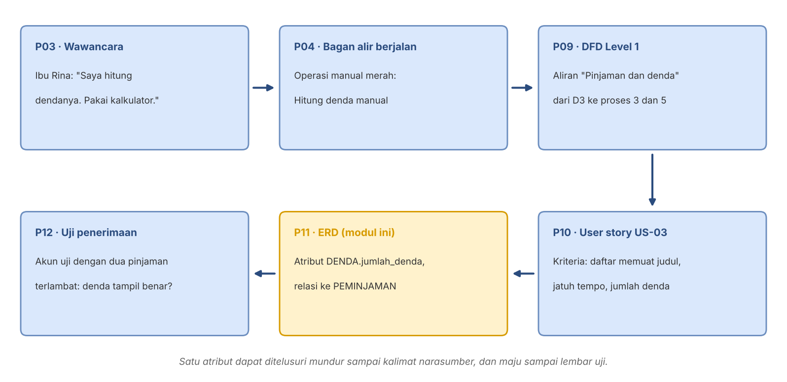
Klik untuk memperbesarDiperiksa dengan urutan tetap pada Bagian N.2.
Tiga pertanyaan untuk setiap ERD buatan mesin.
Mana yang tidak ada di DFD, story, atau wawancara Anda?
Mana yang tidak dibutuhkan satu kebutuhan pun?
Story mana yang datanya tidak tersimpan di gambar? Ini yang paling sering terlewat.
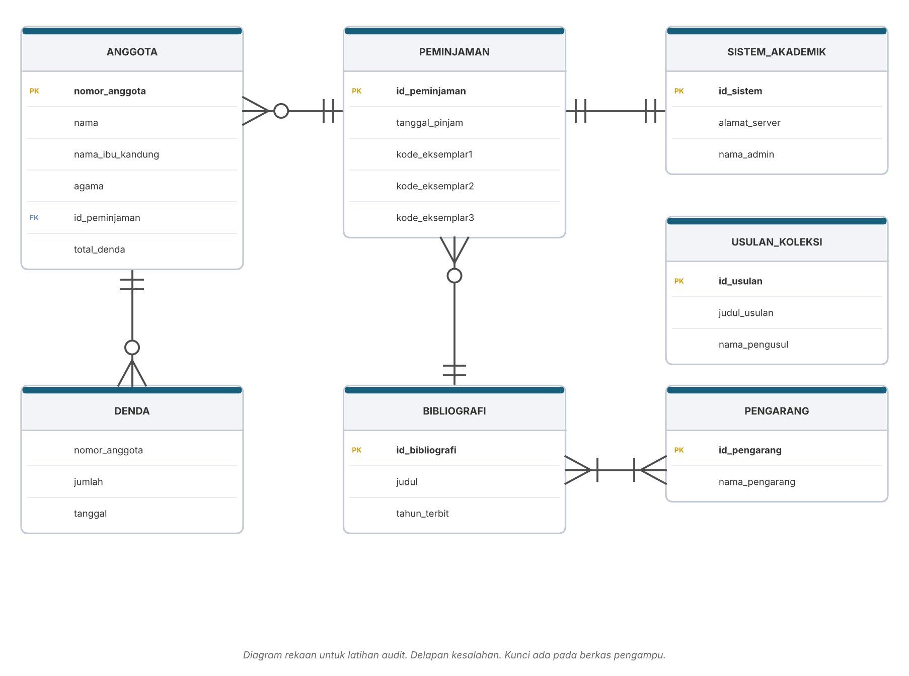
Klik untuk memperbesarLangkah 1, sketsa Chen, dan Langkah 5 tanpa mesin. Langkah 2 sampai 4 berkelompok.
Gambar 23, lima pertanyaan.
LK-11AKertas dulu, lalu draw.io di samping DFD.
LK-11Bdraw.io, uji tiga baris isi, pecah N:M.
LK-11CKamus data, metadata, data pribadi.
LK-11DAudit Gambar 27, lalu jawab ulang.
LK-11EKotak kuning dikerjakan sendiri. Langkah 3 dan 4 boleh memakai mesin dengan prompt dan daftar koreksi.
Pinjam antarperpustakaan. Versi lengkapnya di modul O.4, jangan disalin.
“Berapa lama saya harus menunggu buku dari perpustakaan lain?”
Untuk setiap permintaan yang selesai, sistem harus tahu kapan dikirim ke mitra dan kapan bukunya tiba.
PERMINTAAN menyimpan mitra, tanggal_diteruskan, dan tanggal_diterima.
| id | mitra | tanggal_diteruskan | tanggal_diterima | lama tunggu, dihitung |
|---|---|---|---|---|
| PM01 | M01 | 03/10 | 10/10 | 7 hari |
| PM03 | M01 | 06/10 | 14/10 | 8 hari |
| PM02 | M02 | 05/10 | belum tiba | belum dapat dihitung |
Karena itu pustakawan perlu tahu bentuk datanya sendiri, sampai ke alasan setiap kolomnya disimpan.
Bayu Rizki, M.Kom. Jurusan Ilmu Perpustakaan, Fakultas Adab dan Humaniora, UIN Alauddin Makassar.